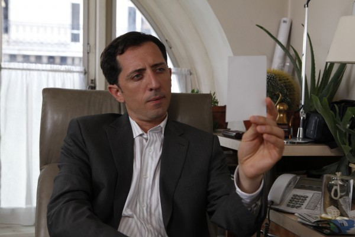
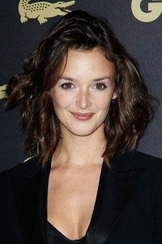
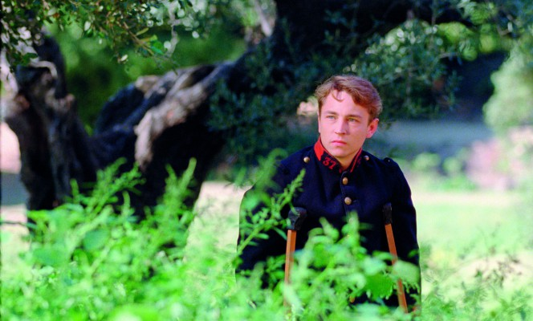

#3787 Der Schaum der Tage

 IMDB-Wertung: 6.5 / 10
IMDB-Wertung: 6.5 / 10  Metascore: 0
Metascore: 0 
Colin (Romain Duris) ist ein wohlhabender Erfinder, der einst ein dufterzeugendes Musikinstrument entwickelte. Er heiratet die schöne Chloe (Audrey Tautou), aber schon in ihren Flitterwochen erkrankt sie schwer, indem eine Wasserlilie in ihre Lunge gerät. Der einzige Weg, ihre Krankheit aufzuhalten, besteht darin, sie ununterbochen mit frischen Blumen zu umgeben. Die Kosten dieser Behandlung zehren schnell das Vermögen des Erfinders auf. Auf der suche nach Hilfe macht er sich auf den Weg durch ein phantastisches Paris und kann dabei nur auf die Hilfe seiner Freunde zählen: Den talentierten Nicolas (Omar Sy) und Chick (Gad Elmaleh), den Vereher des Philosophen Jean-Sol Patre.
Jahr: 2013
Dauer: 130 Minuten
FSK: 12
Land: Frankreich Studio: StudioCanalTonspuren:
Untertitel: Deutsch,
Auflösung: 1080p (1920x1040) Größe: 6717 MB
Genre: Drama, Komödie, Fantasy, Liebe
Regisseur: Michel Gondry
Drehbuch: David Abramowitz
Soundtrack:
Darsteller:
 Romain Duris als Colin
Romain Duris als Colin Audrey Tautou als Chloé
Audrey Tautou als Chloé-  Gad Elmaleh als Chick
 Omar Sy als Nicolas
Omar Sy als Nicolas Aïssa Maïga als Alise
Aïssa Maïga als Alise-  Charlotte Le Bon als Isis
- Sacha Bourdo als La souris
-  Vincent Rottiers als Le religieux
- Philippe Torreton als Jean-Sol Partre
 Alain Chabat als Gouffé
Alain Chabat als Gouffé Zinedine Soualem als Le directeur de l'usine d'armement
Zinedine Soualem als Le directeur de l'usine d'armement- Natacha Régnier als La marchande de remèdes
- Kid Creole als Duke Ellington
- Tilly Scott Pedersen als Fille rousse patron hôtel
- Fabien Jegoudez als Porteur 2
- Michel Gondry als Docteur Mangemanche , uncredited
- Adeline Moreau als L'infirmière , uncredited
 Laurent Lafitte als Le directeur de société
Laurent Lafitte als Le directeur de société- Marina Rozenman als La duchesse de Bovouard
- Mathieu Paulus als Le Chuiche
- Frédéric Saurel als Le Bedon
- Wilfred Benaïche als Le sénéchal
- Alex Raul Barrios als Jésus
- Maurice Maréchal als Douglas 1
- Jean-Yves Cressenville als Douglas 1 bis
- Mourad Boudaoud als Douglas 2
- Nicolas Brun als Douglas 3
- François Hiffler als Le libraire
- Francis Van Litsenborgh als Huissier société
- Paul Gondry als Le 1er docteur
- Cosme Castro als Le sous-directeur de société
- Bobby Few als L'Antiquitaire
- Nathalie Kanoui als Le chef du personnel
- Jeanne Cellard als La vieille dame aux mauvaises nouvelles
- Louise Mast als La fleuriste
- Yan Brian als Patron hôtel
- Julien Seul als Porteur 1
- Calypso Valois als Employée Google 1
- Pascale Murtin als Employée Google 2
- Romain Gondry als Employé giflé
- Mohamed Ouachen als Garçon Flore
- Jean-Pierre Denuit als Concierge conférence
- Frederic Etherlinck als Interviewer Partre
- David Bolling als Voix Jean-Sol Partre
- Jérôme Coué als Ombre géante
- Charlotte Pouch als Assistante Mangemanche
- Meriem Temim als Employée chariot
- Laura Cieplik als Femme vitrine 1
- Joana Morais als Femme vitrine 2
- Simone Hérault als Voix du DJ Varlet
Datei: X:\2013(N-Z)\Schaum der Tage, Der (2013, FSK12, 1920x1040).mkv seit 13.06.2016
Festplatte: HD 2013(I-Z)-2014(A-Z)
 Es gibt insgesamt 133 Filme in der Gruppe '2013(N-Z)'
Es gibt insgesamt 133 Filme in der Gruppe '2013(N-Z)'